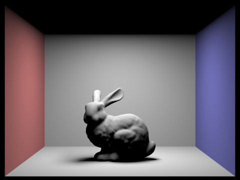
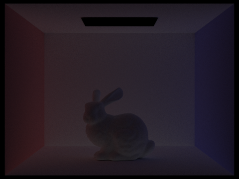
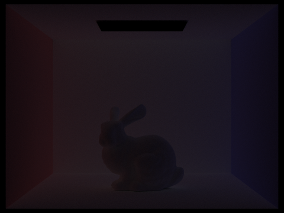
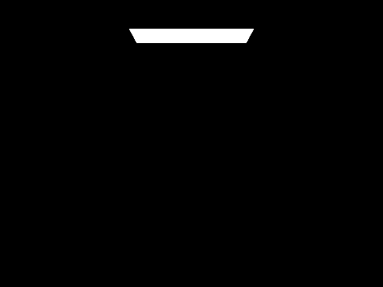
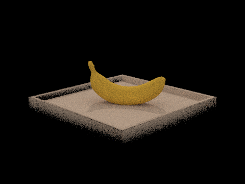

Panther
(CS184 Summer 2025 Homework 3 Write-Up)
~ Aagrim Hoysal ~
Overview
Panther is a path tracer that implements bounding volume hierarchies, light sampling, global illumination, and adaptive sampling. It uses probability extensively to make sure it converges to an accurate image as well as stays feasible to compute, utilizing methods such as importance-sampled Monte Carlo integration and Russian roulette.Theoretically, I found the most interesting thing to be how much probability helps the render not only become resource efficient, but also how it is required to make the image visually correct. The fact that a way to get an unbiased estimator is to randomly sample instead of terminating after some amount of bounces surprised me, and in many different areas probability is critical to render anything. The ideas of importance sampling didn't seem to critical at first until I had to implement it everywhere. Now I see why UCSB requires computer science majors to take Probability and Statistics; it really did help with the conceptual underpinnings of this project.
Implementation wise, it was very satisfying to see everything being used in various ways: rays are just universally helpful, the BVH sped up everything astronomically, the BSDF and sampling functions could be used in different places.
Ray Generation and Scene Intersection (Part 1)
From Pixel to World: Generating Rays
This coordinate directly gives us the direction of the ray, since it is at the location of the pixel coordinate on the image in camera space and the camera (and by extension the origin of the ray) is at \(0, 0\) in camera space. The vector from the camera to our pixel's transformed coordinates is then the transformed value minus the origin, which is just the transformed value. Finally, because we know the ray originates at the camera, all we need to do to convert from the ray in camera space to world space is simply apply the rotation matrix of the camera to rotate the ray in conjunction with the camera. Since vectors (as opposed to points) aren't affected by translations, we don't need to worry about translations or homogenous coordinates, and we can just apply the rotation matrix. The transformed vector now gives us a vector pointing in the direction from the camera origin to the pixel's coordinates on the image plane in world space. This vector normalized, along with the camera's position in world space serving as the ray's origin, defines a ray going through a specified pixel in world space. We can also add some randomness by peturbing the ray by a random amount between \([0,1)\)in the \(x\) and \(y\) directions while in pixel space to sample different directions within the same pixel.
Yielding for triangles
By using Möller-Trumbore, we get some intersection data for free. The \(t\) value serves as distance along the ray, and so lets us cut values too close or far from the camera and prevent intersecting occluded objects by only taking the closest distance. The barycentric coordinates can be used to interpolate between assigned normal vectors for each vertex on the triangle to give a normal at the intersection point as well.
Stopping when Spheres are Near
Sphere intersections follow the same basic method, but instead substituting the ray equation into an implicitly defined sphere. Defining the sphere's center as \(C\), \[ \begin{cases} P = O + Dt & \text{Ray equation} \\ r^2 = (x-C_x)^2 + (y-C_y)^2 + (z-C_z)^2 = \sum_{i = 1}^{3} (P[i] - C[i])^2 & \text{Implicit Sphere} \end{cases} \] This can be formed into a quadratic equation: \[ 0 = -r^2 + \sum_{i = 1}^{3} (O[i] + D[i]t - C[i])^2 \equiv 0 = (O^2 - 2O\cdot C + C^2 - r^2) + 2D\cdot(O-C)t + D^2t^2 \]works in this context...
Bounding Volume Hierarchy (Part 2)
A Bounding Volume Hierarchy is an acceleration structure designed to cut down on the number of intersection tests needed per ray. It achieves this by creating a binary tree of progressively smaller bounding boxes around other bounding boxes or primitives until less than a certain number of primitives remain within, which becomes a leaf of the tree. If a ray doesn't intersect the parent's bounding box, all children's bounding boxes (and as a result all of the leaf nodes' primitives) are contained within and so the tree can be pruned. This leads to O(log n) as opposed to O(n) intersection tests in the average case where n is the number of triangles, since the tree's height is O(log n) and the number of primitives within each leaf is bounded by a constant "max primitives per node".To construct the BVH, we can run a recursive algorithm to build nodes. We first find the minimum bounding box of all primitives this node is responsible for. If the number of primitives is less than a constant max amount of primitives per node, then this node can be a leaf and we don't need to do any more splitting. Otherwise, we'll split the primitives along the longest axis. There are many different heuristics for how to split the primitives into two smaller sets, but I chose to split through the median of the primitive's centroid's coordinate along the longest axis. This just meant sorting the primitive centroids by their longest axis's coordinate (in place, see extra credit section) and assigning the low half to one child and the high half to another child. These two assignments can then be delegated to a recursive call of the same algorithm. Each child now has half the elements of the parent because we split by the median, so eventually there will be fewer than the max amount of primitives per node and the recursion will terminate.
The BVH greatly sped up rendering times, as seen by the following 8 thread, 600x800 renders. For Max Planck (50801 triangles), rendering time was cut from 96.7 seconds to 0.150 seconds (0.0845 for creating the BVH and 0.0651 to find ray intersections), going from processing five thousand to 5.97 million rays/second. For the angel statue, 236 seconds became 0.292 seconds (0.233s BVH + 0.0597s intersections), with 6.74 million rays/second instead of 2k. The intersections per ray dropped especially fast because the scenes contained significant areas of empty space, where many rays were immediately able to exit early because they didn't hit the first bounding box. In scenes with less void, the effect might be less dramatic but still significant. Bounding volume hierarchies also let me render a version of the angel statue in 1.10 seconds with 16 rays per pixel, which went so impossibly slow on the non-BVH version that I aborted it after a few minutes at single digit percentage completion.
* Sidenote, I didn't include intersections per ray as a metric because I think race conditions were messing with the values since the count was highly dependent on the number of threads used. I didn't want to influence timing by adding mutexes, and I didn't want to benchmark on one thread because the non-BVH code would run very slow. Rays/second did also vary, but were still on the same order of magnitude as their single threaded counterparts.
| Model (Primitive Count) | Normal Render | Non-BVH Stats | BVH Stats (BVH construction time + render time) |
| Beast (64618) | 78.3s 6,100 rays/second |
0.150s (0.0845s + 0.0651s) 6,370,000 rays/second |
|
| Max Planck (50801) | 96.7s 5,000 rays/second |
0.150s (0.100s + 0.0498s) 5,970,000 rays/second |
|
| Angel (133796) 1 ray/pixel |
236s 2,000 rays/second |
0.292s (0.233s + 0.0597s) 6,740,000 rays/second |
|
| Angel (133796) 16 rays/pixel |
N/A | 1.10s (0.232s + 0.872s) 6,390,000 rays/second |
Direct Illumination (Part 3)
For CS184 graders! Most of this is context leading into the actual write-up questions. The actual answers are under the heading “Monte Carlo (finally some fun!)".Direct illumination is the irradiance that a pathtracer receives from a point, only based on rays that go directly to a light source or bounce off one surface and then hit a light source. As you can imagine, this is simpler than considering rays that take more than one bounce, but does require thinking about how to get the radiance from the one bounce case. We need to integrate incoming light and its radiance (even if it's zero) over the hemisphere to figure out how much gets reflected, and the practical way to do this is through Monte Carlo integration, which requires sampling the hemisphere.
Lets worry about how we sample later. Monte Carlo integration uses the rendering equation \[ L_o(p, \omega_o) = L_e(p, \omega_o) + \int_{\mathcal{H}^2} L_i(p, \omega_i) \cdot f_r(p, \omega_i \to \omega_o) \cdot \cos \theta_i \cdot d\omega_i \] Integrating over the hemisphere \(\mathcal{H}^2\) for all incoming solid angles \(\omega_i\) where \(L_o\) is the light out, \(L_e\) is the light emitted by the surface, \(f_r\) is how light scatters/gets reflected based on the solid angles of the “viewing"* solid angle (\(\omega_o\)), the light coming from the solid angle in \(L_i\), and the cosine of the incoming solid angle with the normal of the surface. The derivation is out of scope for this explanation, but the integral can be interpreted as adding up all the incoming light rays and multiplying by how much of that light gets reflected in the outgoing direction \(\omega_o\) that we're interested in (the cosine term comes from Lambert's cosine law). The two questions that we will tackle are defining (narrowly for diffuse surfaces only) \(f_r\), the function that returns the amount of light that reflects in a direction based on the incoming and outgoing rays, and how to approximate this integral with the aforementioned Monte Carlo method.
\(f_r\) is thankfully quite simple in the case of diffuse Lambertian surfaces (things that tend to look matte); any light ray coming in gets scattered in all directions of the hemisphere equally. Thus our diffuse \(f_r\) is not a function of the incoming or outgoing ray at all and only needs to take into account how much light gets absorbed by the surface, what we call its albedo. The function ends up being \(f_r = \frac{\rho}{\pi}\) with \(\rho\) being the albedo, divided by a \(\pi\) term as a result of the energy being redistributed across the hemisphere.
Now that we have a feel for the parts of the integral, we actually need to evaluate it. Its finally time to get into Monte Carlo integration.
Monte Carlo (finally some fun!)
importance sampling (13.7s)
importance sampling (12.8s)
Formally, this version of Monte Carlo looks like, with some \(x_i\) sampled from a non-zero probability distribution over \([a, b)\) with pdf \(p(x_i)\) and \(N\) samples, \[ \int_{a}^{b} f(x) dx = \frac{1}{N}\sum_{i=1}^N \frac{f(x_i)}{p(x_i)} \] In combination with our rendering equation, we can substitute the integral with the importance sampled Monte Carlo. We can also replace \(L_i(p, \omega_i)\) with \(L_e(p_{next}, \omega_i)\), the light from the second ray sent, since we are doing direct illumination and don't care about light that wasn't emitted from the first surface in that direction specifically. Thus we get (with \(\cos \theta_i\) being replaced by the dot product of the two unit vectors \(\omega_i\) and \(n\), the normal), \[ L_o(p, \omega_o) = L_e(p, \omega_o) + \frac{1}{N} \sum_{i=1}^N \frac{L_e(p_{next}, x_i) \cdot f_r(p, x_i \to \omega_o) \cdot (x_i \cdot n)}{p(x_i)} \] I implemented two sampling methods– uniform hemisphere sampling and light sampling. Uniform hemisphere sampling does exactly what it says on the tin, i.e. sampling each direction on the hemisphere with equal probability. The probability density function is uniform over the integration region, meaning we don't converge any faster than normal Monte Carlo without importance sampling. The PDF \(p(x_i)\) is always \(\frac{1}{2\pi}\). It simply is just sending random rays from every initial bounce in a constant amount of directions to see if it hits a light (and polling how much it is emitting) or not. My code literally loops \(N\) times, samples a uniform random ray, finds \(f_r\), finds the random ray's next intersection, and computes the formula above. The only tricky part was morphing from world to local coordinate spaces and back, as well as making sure to negate the incoming/outgoing rays because the pathtracer propagates paths backwards. This method gave results, but were much grainer for the same amount of samples compared to the next approach.
Uniform hemisphere doesn't work with
point lights, so can't compare.
Light sampling lets soft shadows form with much less computation than uniform sampling, although it still requires a moderate amount of rays to converge. The table below provides renderings at one ray per pixel, but with different amounts of rays sent after the first bounce with light sampling. As you can see, more rays form soft shadows with less noise. (All renders at one sample per pixel)
|
Very noisy shadows. |
Noisy shadows. |
|
Less noisy shadows. |
Better shadows. |
8 rays/pixel, 64 rays/bounce
2 rays/pixel, 2 rays/bounce
Uniform hemisphere sampling and lighting sampling will both eventually converge to the same rendered image– the difference is how fast. Uniform sampling, with the same amount of rays, will waste more rays on areas with no contribution to the final illuminance and a smaller proportion of the rays will hit the light. This means that information about direct lights propagates slower over the number of samples taken. Meanwhile, light sampling allows for information about the light to propagate quicker as the number of samples grows by tending those samples towards lights. The computational efficiency difference is stark; compare the two similar images to the right. The image quality is similar, with less noise on average in the light sampling image but better shadows in the uniform hemisphere sampling image. However, despite being of similar quality, the uniform hemisphere sampling image took 9.53 seconds to render, with 8 samples per pixel and 64 rays for the second bounce. The light sampling image only took 0.0960 seconds with a piddly 2 samples per pixel and 2 rays for the second bounce, within spitting distance of real time rendering. If we allocate the same amount of resources as the uniform hemisphere sample (8 samples per pixel, 64 rays for the second bounce), light sampling gives us the bottom image in 8.97 seconds.
8 rays/pixel, 64 rays/bounce
Global Illumination (Part 4)
global illumination!
nice shadows!
Implementation-wise, I started with an “radiance from at least one bounce” function, which runs the direct lighting algorithm for the bounce, as well as selecting a random uniform hemisphere direction (based on the even dispersal of light from the diffuse BSDF) to trace and call the same function again to get the light from the second bounce. The next sampled light then gets multiplied and normalized by the rendering equation and is added to the direct lighting, which is then returned as the radiance coming from that point.
We can split our render under this framework further into the contributions to the radiance from a specific number of bounces (i.e, after a certain number of recursive calls). Below is a few images showing those contributions, per number of bounces between the light source and the camera.
|
Contribution from N-bounce rays only |
Cumulative contribution from N-bounce or fewer rays |
|
|
|
|

|
|
|
|
|
|
|
|
|

|
|
|

|
|
As you can see, the contributions progressively reduce. The second bounce tends to show light bouncing from the places where the light landed, typically near the floor, back up towards the roof, and we observe “underglow” on the bottom of objects. At this point, the roof gets lighting from light reflecting back onto it, whereas from the first two bounces the roof is pitch black. The third bounce generally moves into ambient light, providing light to shadows so they aren't pitch black and are more realistic. In general, raytracing as opposed to rasterization allows for secondary reflections to show up in the final image. This generates ambient light automatically that takes into account surrounding objects without a need for a faked “ambient light” constant.
We need to stop this recursion at some point. One way to do this is to call it a day once a ray has bounced some constant maximum amount of times. However, this won't converge to the final image as you increase the number of rays without increasing the number of bounces– we will never sample paths from the light that take more than the maximum amount of bounces to reach the camera. Therefore, we can use a similar trick to Monte Carlo integration and have some probability of stopping our recursion, and weight the contribution inverse proportionally to how likely it was to happen. For example, if there's a flat 70% chance we continue, we weight each result by \(\frac{1}{.7} \approx 1.43\) to let it proportionally represent the 30% that got terminated. This method is called Russian Roulette for… obvious reasons. We also keep the maximum bounce depth just in case, but set it to a high value as hopefully the contribution by that point is near zero.
Here's a comparison of images with direct (zero or one bounces) and indirect (more than two bounces, ended by Russian Roulette) illumination separately.
|
Notice the unnatural lack of color bleeding |
Notice the lighting on the roof and ambient lighting |
|
|
Notice the outside gets no indirect lighting, but the inside has light bouncing around between struts |
We can also see the effect of clamping the Russian Roulette at a certain amount of bounces. Compare the max ray depths below, with 100 being a stand-in for letting Russian Roulette kill \((1-(.7)^{100}) \approx 100\%\) of rays.
|

(source only) |
(direct lighting) |

(.7 survive rate) |
|
(.7 survive rate) |
(.7 survive rate) |
(.7 survive rate) |
I also rendered a banana with a different amount of rays per pixel. It gets progressively cleaner/less noisy as the number of rays increases.
|
|
|
|
|
|
|

|
|
Adaptive Sampling (Part 5)
Adaptive sampling is simple at a high level; send out more rays proportionally to how different the samples are from each other. We take in a constant tolerance (ex. we want the illuminance to be within 5% of the true value) and for each pixel perform a basic 95% confidence interval test with the mean and variance of the illuminance of the samples. If we're 95% confident that the mean lies within our constant tolerance, we can stop sending out more rays, as we are close enough. All this confidence interval-ing can be expressed by checking the following inequality: \[ 1.96 \frac{\sigma}{\sqrt{n}} \ge T \cdot \mu \] Where \(T\) is the tolerance. Once this condition is satisfied, we deem the pixel “converged enough” and stop sampling more. This allows for more complex regions to be sampled more than simpler regions, and increases the fidelity without increasing runtime by redistributing rays from simpler pixels to ones that need more rays to get rid of noise.There are a few tricks to make the code slightly faster. One is batching, i.e checking the condition every \(k\) rays versus every ray, just because the convergence check involves slower operations like a square root and division. Another optimization is using an alternate formula for variance using the first and second moments: \[ \sigma^2 = E[X^2] - E[X] = \frac{\sum (x^2)}{n} - \frac{(\sum x)^2}{n^2} = \frac{(\sum (x^2)) - \frac{(\sum x)^2}{n}}{n} \] Thus, we can just accumulate \(\sum (x^2)\) and \(\sum x\) and plug into the formula to get the variance at any point while sampling without having to reiterate over all the points. This is also useful since we need \(\sum x\) anyways to calculate the mean. The last thing that needs to be done is to loop sampling while the convergence term is less than the tolerance times the mean and the samples are less than the maximum samples (just in case the illuminance doesn't converge in a reasonable amount of samples).
|
|
|
|
|
|
Notice how edges and shadows tend to need more rays (check out that clear increase in the dragon's shadow!) and any surfaces that face other surfaces (such as the ground) and therefore might get more indirect illumination. Both images were rendered with Russian Roulette, 100 bounces max, 1 light sample, and adaptive sampling with 2048 rays max, a batch size of 64 rays, and a tolerance threshold of 5%.
Extra Credit (Part 6)
Memory efficient BVH
I implemented a more memory efficient BVH by having only one array, sorting along one axis in place using thestd::sort function, and then passing the [start, middle) and [middle, end) iterators to
the children nodes of the BVH. Thus starting from the original array, they are sorted along the median pivot on
one axis, then within the left and right side are again split along the median along another axis. Thus the root
node has descendants containing indexes \([0, n/2)\) and \([n/2, n)\), the right child has descendants \([n/2,
3n/4)\) and \([3n/4, n)\), etc. In general, a node of depth \(d\) contains descendants \([\frac{k}{2^d},
\frac{k+1}{2^d})\) for some value \(k\). Since these are all contiguous in the vector and sorted in place, the
construction of the BVH takes up no auxiliary space. The naïve approach requires two times the persistent memory
to store all the new vectors, and while constructing the BVH three times the original memory due to recursively
cloning half the list.
Halton (quasi-random) per pixel sampling
Halton points, as discussed in my rasterization write-up, allows for quasai-random distribution of directions in which the ray points to on the pixel. This mitigates risks of sampling, by random chance, a partiuclar part of the pixel, for example most of the samples ending up on the right side. Halton points guarantee that there are an equal distribution of points in every range as it goes to infinity.We can use the same Halton sampling within a unit square as used in the rasterization write-up to figure out where within the pixel we want the ray to go through. I just replaced the grid sampler that randomly samples a value from \([0,1) x [0,1)\) to Halton points generated from the coprimes 2 and 3. This provides more assurance that our quasi-random samples will always represent the grid well, even at low numbers of samples. For efficiency reasons, I computed the Halton points in a static lookup vector that stores all previous values, and only compute new ones when the next Halton point hasn't already been computed.
|
4 rays/pixel |
4 rays/pixel |
|
|
|
Notice how the difference image has large differences along the edges of the statue. In those areas, you can see the edge of the wing is much more well defined in the Halton point sampling image, even with only four samples per pixel. This is because they are more evenly distrubuted, without being super predictable like a grid would be in order to not cause common aliasing.
(Un)acknowelgement of AI
I did not use AI for this assignment, aside from- Glancing over the Google AI overview to confirm my understanding of some concepts/formulas and to find actual sources with the webpages the overview links
- Spellcheck and grammar by typing out the content for this write-up in a Google Doc with Grammarly enabled
- Double checking \(\mu = \frac{s_1}{n}\sigma^2 = \frac{1}{n-1} \cdot (s_2 - \frac{s_1^2}{n})\) given in the project assignment webpage, which I'm still not conviced is right (I ended up rederiving the formula for variance anyways and not using that)